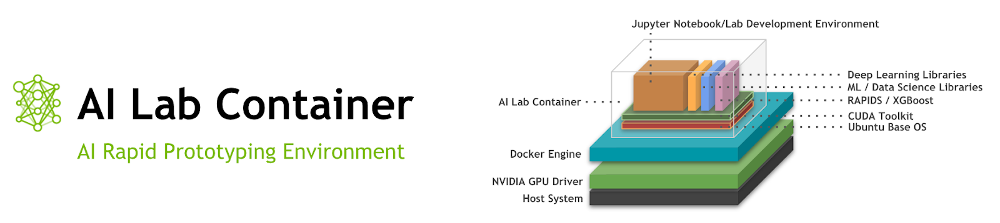
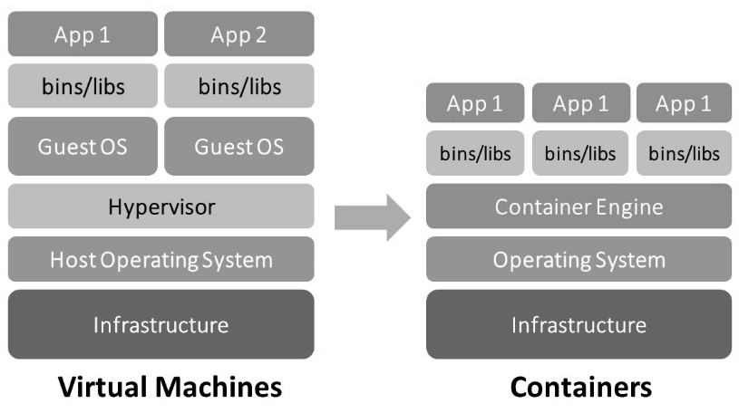
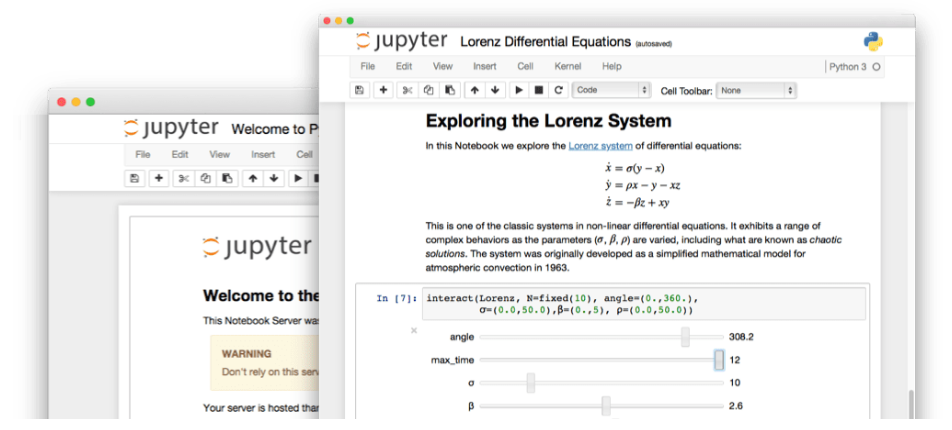
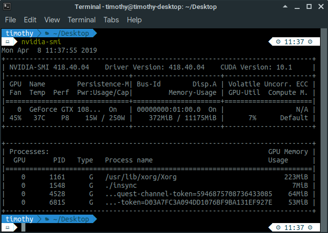
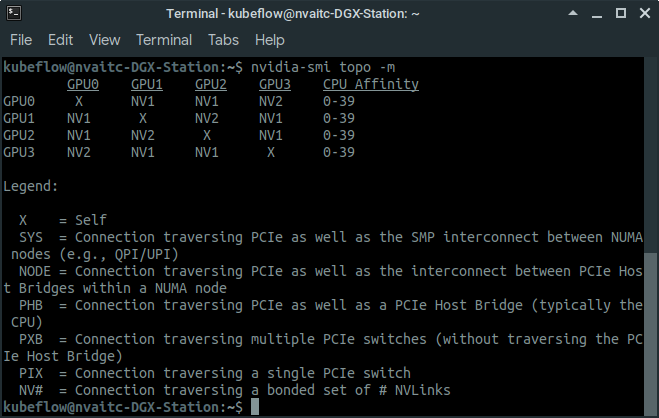
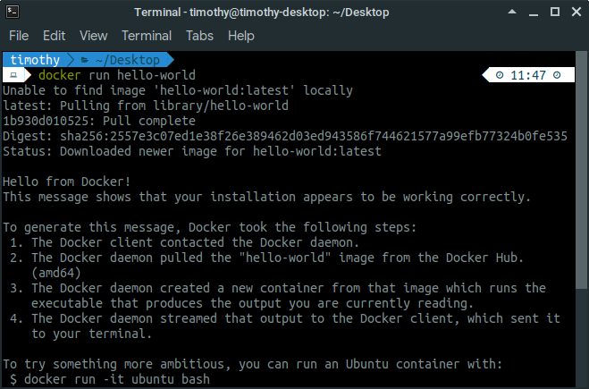
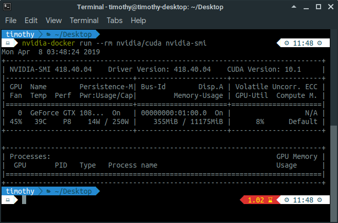
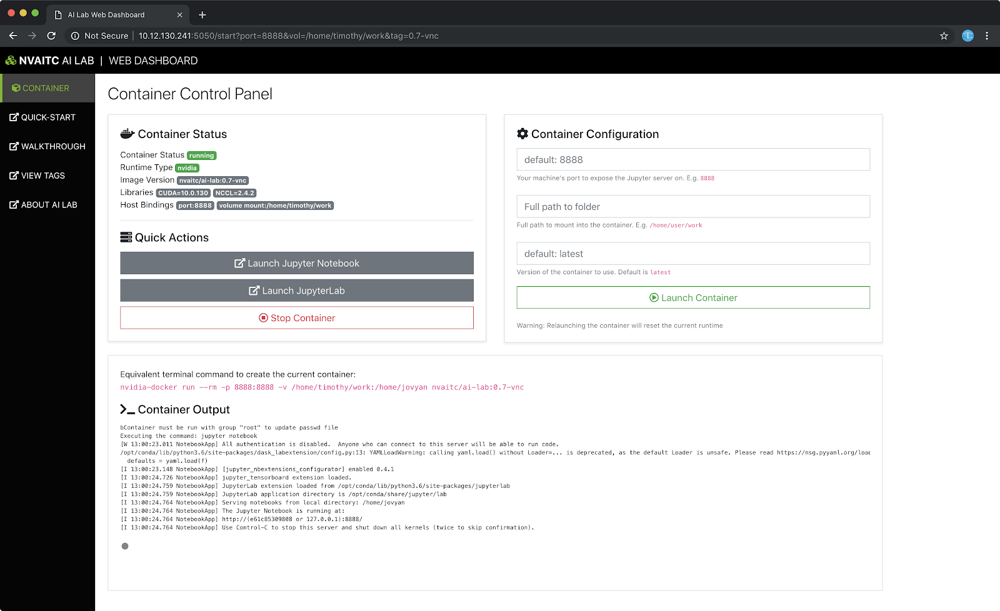

The AI Lab container has been painstakingly tailored to provide you with the best out-of-the-box experience to use various AI frameworks. These include the various Python data-science, machine learning, and deep learning frameworks. Where possible, the libraries are GPU-accelerated and optimised for performance.
The AI Lab container has been engineered such all functionality can be used via a web browser on the same machine, or on a remote machine (e.g. server) with no client-side installation required, other than having a web browser.
To find out more, head over to the GitHub repository where you will find more detailed information about AI Lab.
In this guide, you will learn how to set-up your own personal AI development environment. You will configure your Linux workstation or server to use with AI Lab (as well as NGC containers) to swiftly get started with a wide range of AI projects without worrying about installing and configuring the various libraries.
nvidia-docker)This section touches on two important pieces of software you will need to be familiar with to use the AI Lab container effectively: Docker, and Jupyter Notebook.
To standardise and simplify the process of running the various software frameworks across many different environments, the industry has largely turned to using containers. This largely solves the "it works on my machine!" problem, where an application runs on one computer but not another due to various dependency issues.
You might have heard of virtual machines. Virtual machines take up a lot of resources and are slow because they have a lot of overhead in running multiple full versions of the operating system (OS). A container can be thought of as a very lightweight and efficient form of a virtual machine that uses the host OS kernel instead.

Docker containers are a type of container runtime that is designed for application containers. This means that Docker images contain a snapshot of a application already configured and installed, and launching a new Docker container from that image allows you to run that application immediately without worrying about installation procedures or configuration.
The NVIDIA Container Runtime (nvidia-docker) provides containers a way to access the NVIDIA GPUs on a workstation or server.
Jupyter Notebook (and the newer JupyterLab) provide interactive computing environments (also known as "notebooks")in a web-based interface. It is similar in some ways to tools such as Wolfram Mathematica.
Jupyter notebooks embody the idea of a computational narrative, where narrative text, code, results, images, and even interactive widgets are all part of the same document.

It is very important that you verify that you meet the following system requirements:
418.x as of March 2019)nvidia-docker)To check your GPU driver, try running nvidia-smi. If you get a command not found error, then you do not have the NVIDIA GPU driver installed. If you do, check the driver version (top of the output). It you need to have driver 410.x or newer.
If you meet the above requirements (e.g. you are using a NVIDIA DGX system), you are free to skip to Step 7. Else, keep on reading.
To use your NVIDIA GPU for compute tasks like machine learning and deep learning, you will need to install the NVIDIA drivers and CUDA Toolkit.
For this, please make sure that you are on a clean Ubuntu system (no existing NVIDIA drivers or libraries) and that you have sudo (root) permissions. If you're the only user, you probably do. If you're using a shared workstation or server, please approach your administrator.
Download and install NVIDIA drivers and the CUDA Toolkit, we can head over to the NVIDIA website and download the CUDA Toolkit installer, which will install both the CUDA Toolkit, as well as the latest compatible driver.
You'll need to open a new Terminal window:
CTRL + ALT + T , or navigate to your applications menu and launch the Terminal app# <- denotes this line is a comment # navigate to your Downloads folder. Usually, this can be done with: cd ~/Downloads # install the CUDA network repository sudo dpkg -i cuda-repo-ubuntu1804_10.1.105-1_amd64.deb sudo apt-key adv --fetch-keys https://developer.download.nvidia.com/compute/cuda/repos/ubuntu1804/x86_64/7fa2af80.pub sudo apt-get update # install the CUDA toolkit and NVIDIA drivers sudo apt-get install cuda
The installation will take some time to complete (around 30 minutes on a Broadband internet connection).
Please reboot your system before proceeding to the next step.
If the installation has succeeded, the all-important nvidia-smi tool will also have been installed. nvidia-smi will allow you to check the current status of the GPUs in your system.
nvidia-smiOpen a new Terminal and type nvidia-smi. It should produce an output similar to the one below:

If you see that, congratulations! The NVIDIA drivers and CUDA Toolkit have been installed successfully.
If you have multiple GPUs on your system, you can run nvidia-smi topo -m to see how the GPUs are interconnected. This will affect which GPUs you may want to choose to run a multi-GPU training job.

For example, in the above output (DGX Station), GPU0 and GPU3 are connected by two bonded NVLink connections, while GPU0 and GPU1 are connected by one NVLink connection. This means that GPU0 and GPU3 can communicate at a higher bandwidth than possible between GPU0 and GPU1 .
In this step, you will be installing the commonly used Docker runtime for running containers.
In this step, you will be adding the Docker repository to Ubuntu and install Docker from there. Open a new Terminal and execute the following commands. Again, please take note every command is one line.
sudo apt-get install -y apt-transport-https ca-certificates curl software-properties-common curl -fsSL https://download.docker.com/linux/ubuntu/gpg | sudo apt-key add - sudo add-apt-repository "deb [arch=amd64] https://download.docker.com/linux/ubuntu $(lsb_release -cs) stable" sudo apt-get update sudo apt-get install docker-ce docker-ce-cli containerd.io
To verify that Docker has been installed correctly, we will be running the hello-world container with the following command:
docker run hello-world
Since the container image hello-world does not yet exist on our system, Docker will pull the image from the Docker Hub before running it. You will see the following output:

Congratulations! Now we have a working container runtime.
In this step, we will install the NVIDIA Container Runtime (also known as nvidia-docker) in order to allow Docker containers to access the GPU. This is required for the applications running in the AI Lab container, such as TensorFlow, PyTorch and RAPIDS, to use the GPU to speed up computations.
The benefit of using nvidia-docker is that we can run various CUDA applications and frameworks on a wide range of systems without needing to configure the host system for our own application. For example, OpenPose recommends CUDA 8.0, and if the host system has a different version of CUDA, the application is unlikely to work. With nvidia-docker, as long as our host system has CUDA 8.0 or newer, the application will work.
nvidia-dockerIn this step, you will be downloading and installing the NVIDIA Container Runtime. Please run the following commands in Terminal, and again note that every command is one line.
# adding the repository curl -s -L https://nvidia.github.io/nvidia-docker/gpgkey | sudo apt-key add - distribution=$(. /etc/os-release;echo $ID$VERSION_ID) curl -s -L https://nvidia.github.io/nvidia-docker/$distribution/nvidia-docker.list | sudo tee /etc/apt/sources.list.d/nvidia-docker.list sudo apt-get update # install nvidia-docker sudo apt-get install nvidia-docker2 # restart the docker daemon sudo pkill -SIGHUP dockerd
nvidia-docker is installed correctlyTo verify that nvidia-docker is installed correctly, you can run the following command to execute nvidia-smi inside a docker container.
nvidia-docker run --rm nvidia/cuda nvidia-smi # this also works, and is functionally equivalent: docker run --runtime=nvidia --rm nvidia/cuda nvidia-smi
Since you probably don't have the nvidia/cuda image on your system, Docker will go ahead and pull it from the Docker Hub before running it.
If you see the nvidia-smi output, then your installation is working:

nvidia-docker)The AI Lab container has pre-installed a large variety of commonly used libraries and frameworks. These include:
All these functionalities can be access through a web browser.
AI Lab GUI is a simple Python application that runs on your workstation or server. It allows you to easily start, stop, and launch Jupyter notebook via a simple web interface. This means that you can use the container without needing to manually type in docker commands. You can also use it remotely to manage the container if you do not have SSH access to your system.
Installing and using the AI Lab GUI is recommended for beginners who may not be experienced with docker or the command line interface.
If you've come to this guide from the Web Dashboard, then you've already installed the AI Lab GUI package. If not, you are encouraged to install the AI Lab GUI package:
# Python 3 is needed to run the AI Lab GUI app sudo apt install python3 python3-pip pip install ai_lab_gui
Running AI Lab GUI is simple:
ai_lab_gui
By running the above command on your system, the Web Dashboard will start on port 5050 and open in a browser.

If you're running the command on a remote server, find out what is the IP address of the server and navigate to ip-address:5050 in your web browser to see the Web Dashboard.
Here's a breakdown of the Web Dashboard
(placeholder)
To run the AI Lab container with default settings, just click "Launch Container".
In the bottom panel, you can view the output of the container, as well as the command to launch the container in the command line.
Using the AI Lab GUI is convenient, but it is important to also learn the basics of launching containers from the command line using the docker command line interface (CLI).
Pulling a container:
docker pull nvaitc/ai-lab:latest
Running an interactive shell inside the container:
nvidia-docker run --rm -it nvaitc/ai-lab bash
Run Jupyter Notebook with the following options:
8888 to your host machinemount /home/$USER/work as the working directorynvidia-docker run --rm \ -p 8888:8888 \ -v /home/$USER/work:/home/jovyan \ nvaitc/ai-lab
For detailed instructions on how to use AI Lab via the docker CLI, please head over to the Instructions page on the GitHub repository.
nvidia-docker)The MNIST task is the "Hello World" of the machine learning work. The tasks resolves around using machine learning to classify handwritten digits (0, 1, 2 and so on, up to 9). We will be using the popular Keras (in the form of tensorflow.keras) framework to perform this task.
(placeholder)
(placeholder)
(placeholder)
(placeholder)
(placeholder)
(placeholder)
If your system does not have multiple GPUs, you can skip pass this step.
(placeholder)
(placeholder)
nvidia-docker)Congratulations! You have reached the end of this guide.
Do head over to the GitHub repository to learn more about the AI Lab container.